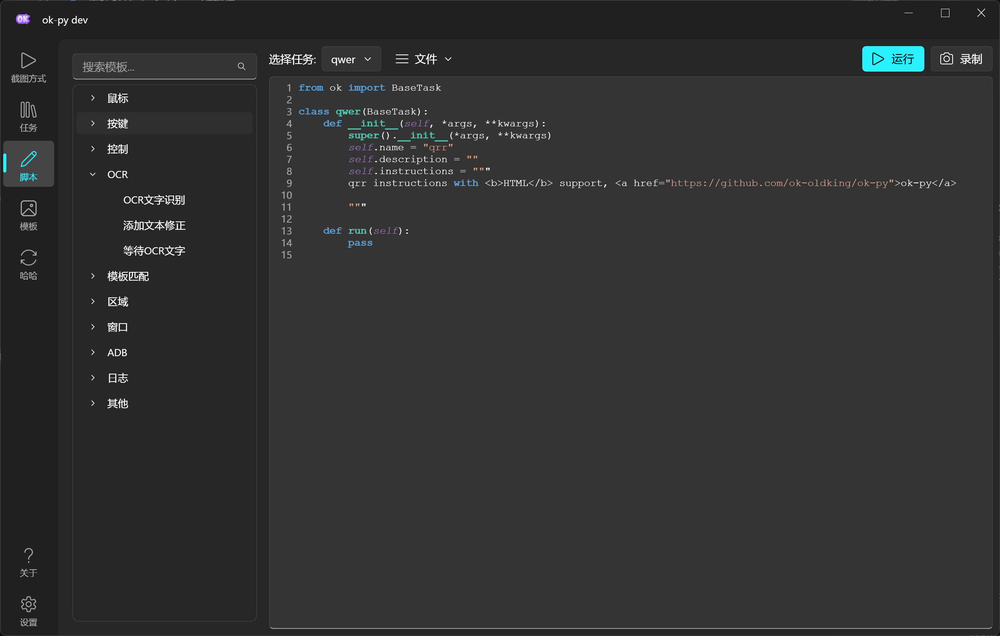
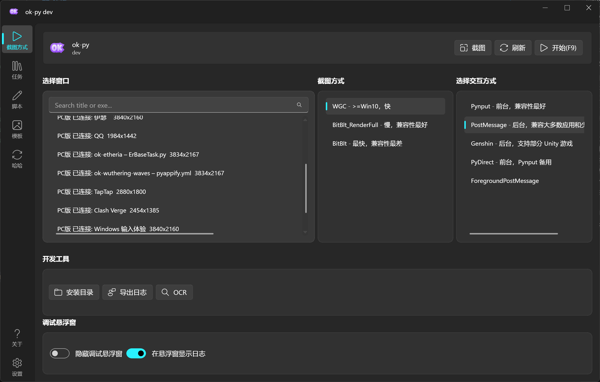
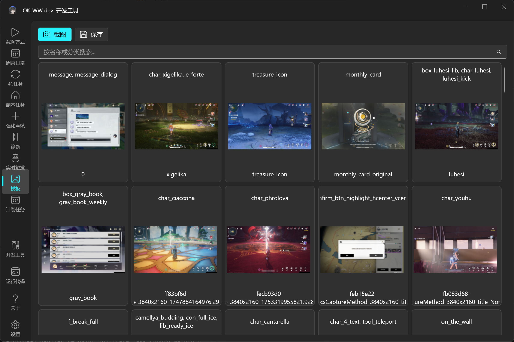
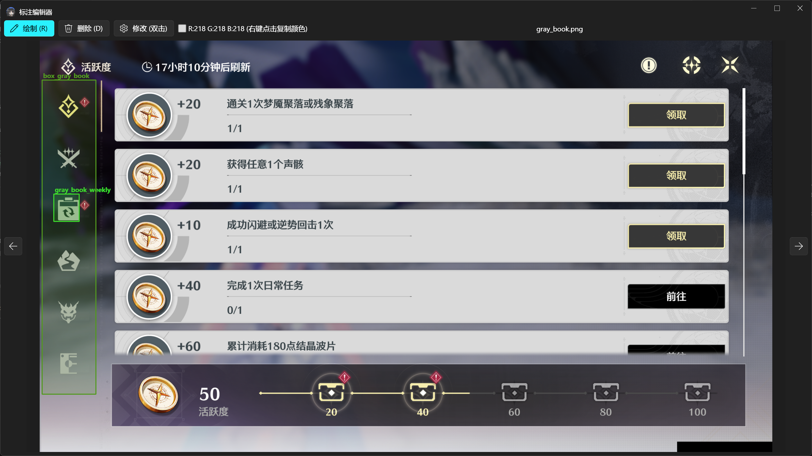

ok-script-app
English | 中文
ok-script-app 是一个基于 ok-script 的 Python 自动化项目模板。它提供了可直接运行的 GUI、任务示例、配置控件示例、OCR 示例、模板匹配示例、测试用例和打包配置，适合快速创建面向 Windows 原生游戏、Android 模拟器或浏览器游戏的自动化项目。
这个仓库不是某个具体游戏的自动化成品，而是 ok-script 应用的起步工程和功能演示。
功能演示
API 列表与脚本录制

多种截图与交互方式

标注管理与模板匹配


主要内容
- 可直接启动的 ok-script GUI 应用入口。
MyOneTimeTask示例任务，演示常用任务 API 和配置控件。- 配置控件示例：下拉框、布尔值、整数、浮点数、字符串、多行文本、列表、多选、文件选择、文件夹选择、全局配置和按钮组。
- OCR、相对区域识别和模板匹配示例。
ConfigOption全局配置示例。TaskTestCase自动化测试示例。- i18n 翻译文件和
.mo编译产物。 pyappify.yml和 GitHub Actions 打包发布配置。
快速开始
1. 从模板创建仓库
点击 GitHub 上的 Use this template，创建你自己的 repository，然后 clone：
git clone https://github.com/<你的 GitHub 用户名>/<你的仓库名>.git
cd <你的仓库名>
clone 完成后，可以选择以下任一方式初始化项目：
- 使用 AI 编程工具（推荐）：在 Codex 中输入
使用 $initialize-ok-script-app 初始化这个仓库。使用其他 AI 编程工具时，请让它先阅读.agents/skills/initialize-ok-script-app/SKILL.md。初始化助手会先询问游戏名、运行平台、Windows 进程名、Android 包名或浏览器 URL、仓库地址、图标和第一个任务等信息，再修改项目。 - 手动初始化：继续完成下面的步骤。
2. 安装 Python 3.12 并创建虚拟环境
安装 Python 3.12.10（Python 3.12 最后一个提供 Windows 安装包的完整维护版本），然后在仓库目录中执行：
py -3.12 -m venv .venv
.\.venv\Scripts\Activate.ps1
python -m pip install --upgrade pip
python -m pip install -r requirements.txt --upgrade
通常不需要管理员权限；如果目标游戏以管理员权限运行，自动化程序也需要使用相同权限启动，否则截图或输入可能无法生效。
3. 根据游戏修改 src/config.py
至少检查并修改以下配置：
gui_title：应用窗口名称。windows：Windows 原生游戏的 exe、窗口类名、交互方式和截图方式。adb.packages：模拟器或 Android 设备上的游戏包名。browser：浏览器游戏的 URL、显示名称和浏览器分辨率。supported_resolution：支持的画面比例和最低分辨率。links：项目主页、反馈渠道和社区链接。
windows、adb、browser 三种运行目标必须至少配置一种，也可以同时配置多种。浏览器配置示例已放在 src/config.py 中；启用浏览器目标时，还需要安装 playwright，并将它加入 requirements.in 和锁定后的 requirements.txt，否则本地运行或 GitHub 打包会缺少依赖。不确定窗口或设备信息时，可以先运行 Debug 模式进行确认。
4. 替换应用图标
使用自己的图标替换 icons/icon.png 和 icons/icon.ico。保持文件名不变即可避免额外修改配置；如果更改文件名，还需要同步修改 src/config.py 和 pyappify.yml。
5. 配置更新仓库
修改 pyappify.yml 中各 profile 的 name 和 git_url：
- 正式发布时，建议让
git_url指向单独的轻量更新仓库。 - 前期测试时，可以直接指向第 1 步创建的源码仓库。
- 如果使用独立更新仓库，还需要同步修改
.github/workflows/build.yml中的同步目标并配置对应的 GitHub Actions Secrets；删除不使用的 CNB、MirrorChyan 等模板专用步骤。
6. 新建并注册第一个任务
在 src/tasks 中新建任务类，然后将它添加到 src/config.py 的 onetime_tasks 或 trigger_tasks：
'onetime_tasks': [
["src.tasks.MyFirstTask", "MyFirstTask"],
["ok", "DiagnosisTask"],
],
一次性任务继承 BaseTask，后台触发任务继承 TriggerTask。可以参考 src/tasks/MyOneTimeTask.py，或让 AI 使用 $ok-script-tasks 和 $ok-script-codegen 创建任务。
启动 Debug 模式验证配置和任务：
python main_debug.py
运行测试：
python -m unittest tests.TestMain
7. 推送 tag，触发 exe 打包
推送 tag 前，必须先根据自己的项目修改 .github/workflows/build.yml，包括更新仓库同步目标、安装包名称、Release 下载链接、Git 信息和所需 Secrets。
- 接入 Mirror酱：保留并修改
.github/workflows/mirrorchyan_uploading.yml和.github/workflows/mirrorchyan_release_note.yml中的owner、repo、mirrorchyan_rid、安装包文件名等项目参数；同时保留build.yml中触发这两个工作流的步骤，并在仓库中配置MirrorChyanUploadToken。 - 不接入 Mirror酱：删除上述两个 MirrorChyan workflow 文件，并删除
build.yml中的Trigger MirrorChyanUploading步骤。
完成工作流配置后，提交并推送代码，再创建符合 v* 规则的版本 tag：
git add .
git commit -m "Initialize project"
git push origin HEAD
git tag v0.1.0
git push origin v0.1.0
GitHub Actions 会运行测试、打包 exe，并在仓库的 Releases 页面创建对应版本。首次发布前，请再次检查 .github/workflows 中是否仍有模板仓库地址、模板项目名或尚未配置的 Secrets。
项目结构
src/tasks 任务类示例
src/config.py ok-script 应用配置
src/ui 自定义 UI Tab 示例
tests 自动化测试用例
assets 模板匹配资源和 COCO 标注
docs/images README 使用的演示图片
i18n 翻译文件
icons 应用图标
.agents/skills AI 初始化、任务开发、翻译和发布 Skills
main.py 普通入口
main_debug.py Debug 入口
requirements.in 直接依赖列表
requirements.txt 锁定后的完整依赖
run_tests.ps1 PowerShell 测试入口
pyappify.yml 打包配置
deploy.txt 发布时同步到更新仓库的文件列表
.github/workflows 自动化构建与发布流程
开发任务
一次性任务示例位于 src/tasks/MyOneTimeTask.py，后台触发任务示例位于 src/tasks/MyTriggerTask.py。你可以从这里开始：
- 修改
default_config增加任务配置默认值。 - 修改
config_type选择配置控件类型。 - 在
run()中编写自动化逻辑。 - 使用
self.ocr()做文字识别。 - 使用
self.find_one()或self.find_feature()做模板匹配。 - 使用
self.info_set()在 UI 中展示任务状态。 - 使用
self.log_info(..., notify=True)发送通知。
启用自定义任务后，也可以在 GUI 中创建和编辑任务脚本。
发布相关文件
.github/workflows/build.yml：监听v*tag，运行测试、同步更新文件、打包并创建 GitHub Release。pyappify.yml：定义应用名称、入口、图标、Python 版本和更新仓库。deploy.txt：定义需要同步到独立更新仓库的文件。.github/workflows/mirrorchyan_*.yml：可选的 Mirror酱上传与更新日志工作流；不接入时按快速开始第 7 步删除。
ok-script 文档
社区
- 用户群：
1097603920 - 开发者群：
938132715 - Discord
 在 GitHub 查看源文件 ↗
在 GitHub 查看源文件 ↗